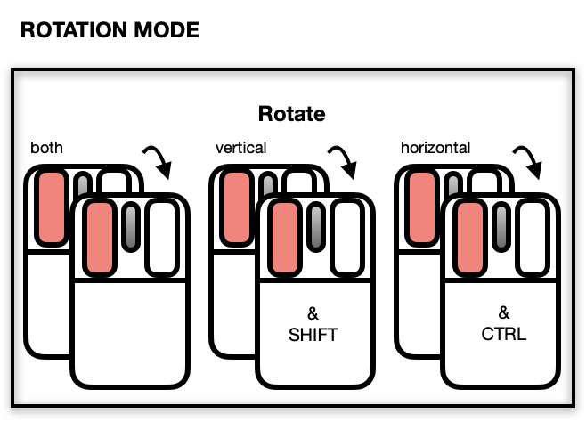
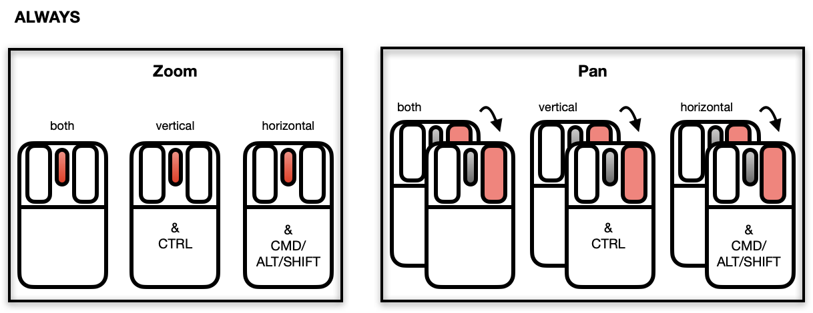
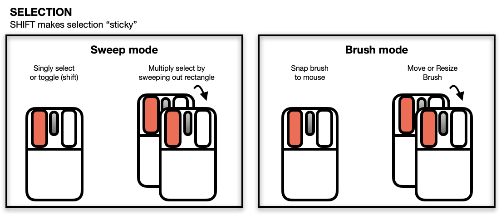
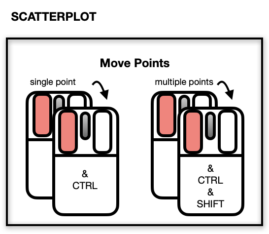
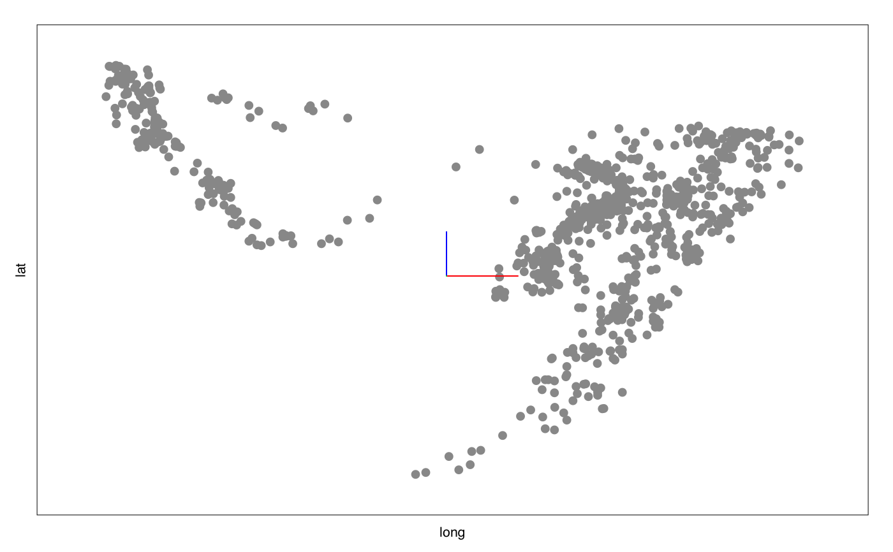

l_plot3D.Rdl_plot3D is a generic function for creating interactive
visualization environments for R objects.
l_plot3D(x, y, z, axisScaleFactor, ...)
| x | the x, y and z arguments provide the x, y and z coordinates for the plot. Any reasonable way of defining the coordinates is acceptable. See the function xyz.coords for details. If supplied separately, they must be of the same length. |
|---|---|
| y | the y coordinates of points in the plot, optional if x is an appropriate structure. |
| z | the z coordinates of points in the plot, optional if x is an appropriate structure. |
| axisScaleFactor | the amount to scale the axes at the centre of the rotation. Default is 1. All numerical values are acceptable (0 removes the axes, < 0 reverses their direction.) |
| ... | named arguments to modify plot states. |
widget handle
l_help() function call. The general direct manipulation and interaction gestures are outlined in the following figures. Rotating Press 'R' to toggle rotation mode. When rotation mode is active, either use the below mouse gestures or arrow keys to rotate the plot.  The centre of the rotation can be changed by panning the plot. To reset the rotation, use the tripod icon in the plot inspector. Zooming and Panning  Selecting Points/Objects  Moving Points on the Scatterplot Display 
NOTE: Although it is possible to programmatically add layers to an l_plot3D, these will not appear as part of the 3D plot's display. There is no provision at present to incorporate rotation of 3D geometric objects other than point glyphs.
Other three-dimensional plotting functions: l_plot3D.default,
l_scale3D
#> [1] ".l100.plot3D" #> attr(,"class") #> [1] "l_plot3D" "l_plot" "loon"#> [1] ".l101.plot3D" #> attr(,"class") #> [1] "l_plot3D" "l_plot" "loon"scaled_quakes <- l_scale3D(quakes) with(scaled_quakes, l_plot3D(long, lat, depth, linkingGroup = "quakes") )#> [1] ".l102.plot3D" #> attr(,"class") #> [1] "l_plot3D" "l_plot" "loon"#> [1] ".l103.plot3D" #> attr(,"class") #> [1] "l_plot3D" "l_plot" "loon"# Or together: with(scaled_quakes,{ l_plot3D(long, lat, depth, linkingGroup = "quakes") l_plot3D(mag, stations, depth, linkingGroup = "quakes") } )#> [1] ".l105.plot3D" #> attr(,"class") #> [1] "l_plot3D" "l_plot" "loon"# Get an R (grid) graphics plot of a loon plot p <- with(scaled_quakes, l_plot3D(long, lat, depth, linkingGroup = "quakes")) plot(p)# or to save the grid data structure (grob) for later use pg <- loonGrob(p) # Use with other tk widgets tt <- tktoplevel() p1 <- l_plot3D(parent=tt, x=c(1,2,3), y=c(3,2,1), z=c(1,2,3)) p2 <- l_plot3D(parent=tt, x=c(4,3,1), y=c(6,8,4), z=c(3,2,1)) tkgrid(p1, row=0, column=0, sticky="nesw")#> <Tcl>tkgrid(p2, row=0, column=1, sticky="nesw")#> <Tcl>tkgrid.columnconfigure(tt, 0, weight=1)#> <Tcl>tkgrid.columnconfigure(tt, 1, weight=1)#> <Tcl>tkgrid.rowconfigure(tt, 0, weight=1)#> <Tcl>tktitle(tt) <- "Loon plots with custom layout"